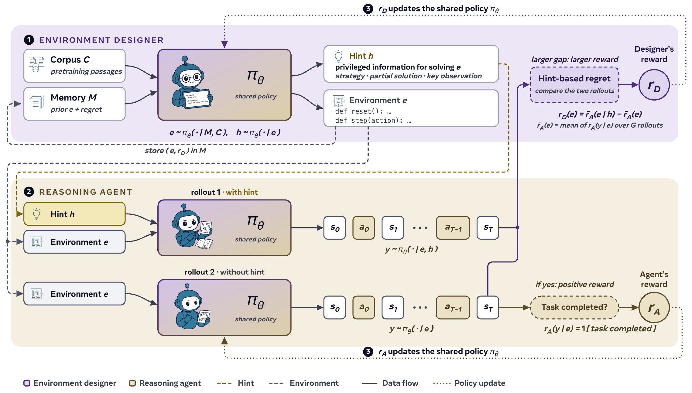

01研究背景与问题定义
固定训练环境越练越熟后，继续强化学习可能只重复已掌握模式；人工扩展任务又难以跟上能力变化。让模型自己出题也没有自动解决问题：它可能生成无效程序、无解难题，或在熟悉模板里循环。SPADE 将可执行环境本身设为可学习对象，用同一个模型同时扮演环境设计者和求解者，让课程与能力共同变化。
环境用 Python 的 reset / step 接口编码状态转移和奖励，因而可以从单轮答案扩展到多轮行动。设计者不仅生成环境，还给出提示；同一求解策略在有提示和无提示两种条件下的表现差，近似表示该环境是否存在尚未掌握、却可能学会的结构。它奖励的目标因此不只是“让学生失败”。
| 轴 | 缺少它会发生什么 | SPADE 的来源 |
|---|---|---|
| 内容广度 | 生成器围绕自身偏好的程序模板收缩。 | 每轮从外部语料取新素材。 |
| 学习难度 | 课程变得过易，或只剩无法解决的题。 | 历史环境记忆 + 有无提示回报差 + 难度锚点。 |
| 可执行与可监督 | 自然语言任务无法可靠运行和计算奖励。 | 代码接口与语法、执行检查，失败候选不进入训练池。 |
核心创新是把生成任务的程序、当前求解反馈和设计者更新放进同一个训练回路。它并不是无外部信息的闭门自举：外部文档提供新意，程序奖励和环境检查提供约束。
02方法与技术路线
一个共享参数模型通过角色提示切换 Environment Designer（ED）与 Reasoning Agent（RA）。每轮先生成环境和提示，再采集求解轨迹，两个角色用不同奖励和归一化方式共同更新。
外部语料 · 提供广度
数学、科学或代码文档，给设计者新的问题结构。
环境记忆 · 提供难度参照
保存旧环境、技能标签和 regret；避免重出已掌握内容。
候选可执行检查
语法及执行合法才进入池；reset / step 同时定义观察、转移和奖励。
无提示求解
完成多轮行动；环境奖励提供 RA 学习信号。
有提示求解
补充关键结构提示，估计当前策略可达到的更高回报。
代码即环境：扩大自由度，也扩大验证责任
设计者输出的是环境程序，不只是题干与答案。reset 初始化状态，step 接受动作并返回观察和奖励，一套接口统一单轮推理与多轮工具任务。模型可以改变问题结构、隐藏状态和交互规则，而不只在人工模板里调整数字。
候选必须能解析和执行；这保证可运行，却不自动保证任务有真实学习价值。奖励函数也是生成代码的一部分，错误或易被利用的评分可能引导学生学到模拟器漏洞。理解这一点，才能把“任意可计算环境的表达能力”和“生成高质量环境的实证能力”区分开。
提示 regret：为什么不直接奖励低成功率
设有提示平均回报减去无提示平均回报为 regret：两边都成功说明已掌握，两边都失败说明提示也不能帮助，只有提示显著帮助的环境更可能处于可学边界。这借同一策略的有信息版本充当能力参照，无需另训一个对抗求解器。
实际训练不只使用这个差。负 regret 被截断为零；归一化 regret 权重为 0.4，成功率在 0.4–0.6 区间得高分的难度锚点权重为 0.6。后者先把课程拉到合适难度，前者再偏向可教的环境。因而方法效果不能全部归因于提示回报差；有提示采样还额外消耗推理。
共享训练与课程记忆：谁改变了谁
无提示 RA 轨迹获得程序给出的任务奖励，按同环境组内标准化；ED 奖励按技能归组中心化，并提高较少设计轨迹的权重。设计者更新有所延迟，以收集完整训练窗口内的成功率，再用截断重要性采样处理离策略偏差。两个角色共享权重，因此任何一侧更新也会影响另一侧。
外部语料控制环境“关于什么”，记忆控制当前模型“还缺什么”。记忆保存旧环境、得分与标签，让设计者从高价值结构变体继续而非每轮从零开始。这不是测试时给求解器附加答案库；训练收益最终体现在更新后的参数和环境生成能力。
论文原始结构图 · 点击对照

03实验设计与结果分析
生成课程能否改善未参与训练的能力
Qwen3-30B-A3B，游戏环境设置；固定环境基线也从同基座训练 400 轮。八项基准平均包含不同任务族。
| 训练方式 | 八项平均 | 相对基座 |
|---|---|---|
| 基座 | 50.2 | — |
| 固定环境 GRPO | 51.4 | +1.2 pp |
| 固定环境 RLVE | 53.0 | +2.8 pp |
| SPADE | 58.3 | +8.1 pp |
SPADE 比最强固定环境基线高 5.3 点，提升主要集中在程序化推理，科学与代码也受益；竞赛数学大体保留。这个分布比“总体变聪明”更具体：生成多样交互结构对需要程序和多步反馈的任务更有帮助。
同训练迭代不意味着完全等计算量，因为设计、校验和有提示采样都是额外开销。结果支持自适应环境的有效性，不直接证明单位总计算优于固定环境。
广度与自适应难度能否相互替代
同 30B 游戏设置；消融表各取八项平均最优检查点，不是统一最后一步。
| 设置 | 平均 | 解释边界 |
|---|---|---|
| 完整 SPADE | 58.3 | 全部课程机制。 |
| 无环境记忆 | 53.2 | 失去难度历史。 |
| 无语料锚定 | 53.5 | 内容多样性明显塌缩。 |
| 固定 GPT-5.5 设计者，保留语料与记忆 | 53.0 | 改变设计模型并冻结，不能单独隔离梯度作用。 |
语料有无的 Vendi/n 为 0.68 与 0.04，表明外部素材对环境广度非常关键；这项定量证据比可视化投影更有说服力。完整配置优于各部分，但冻结设计者对照还改变模型或记忆，因此共同适应的整体价值强于“设计者梯度独立贡献多少”的结论。
regret 混合奖励达到 58.3，EMA 学习潜力奖励达到 55.9；两者都明显好于部分冻结控制。该对照说明奖励设计有增益，同时提示大量收益来自持续供给合适课程，不能把提示 regret 视为唯一动力。
04贡献、局限与综合评价
核心贡献：把课程供给升级为可以学习的系统变量
SPADE 的概念价值是把环境分布纳入优化，而不只优化固定题集上的求解策略。代码环境带来统一交互接口，外部语料提供新结构，提示差和历史记忆将结构定位到当前学习边界。未见任务的收益说明这条回路可以产生有用训练信号。
“提示可解”仍不是“未来值得学”的充分条件
有提示回报差衡量当前策略对特权信息的敏感性，既可能来自缺少可迁移技能，也可能只是提示几乎透露了关键步骤。论文的提示示例本身有时提供非常直接的策略线索；若环境只靠高度具体提示才能解决，regret 高也未必代表无提示训练能学到通用规律。
需要固定环境难度、控制提示信息量，比较生成环境上的学习增量与外部迁移。如果高 regret 只预测同环境记忆而不预测新任务收益，便表明该信号主要寻找“可被提示修复”的题，而非广义学习潜力。理想化均衡论证依赖最优响应等假设，也不能替代有限模型训练中的这一实测。
综合看，这是有多尺度与多任务证据支持的自适应环境训练框架。最值得保留的是广度来源与难度来源的分工，以及对完整闭环的验证；开放环境生成质量、总成本和 regret 与真实学习潜力之间的距离，仍限定其“开放式自进化”的强度。